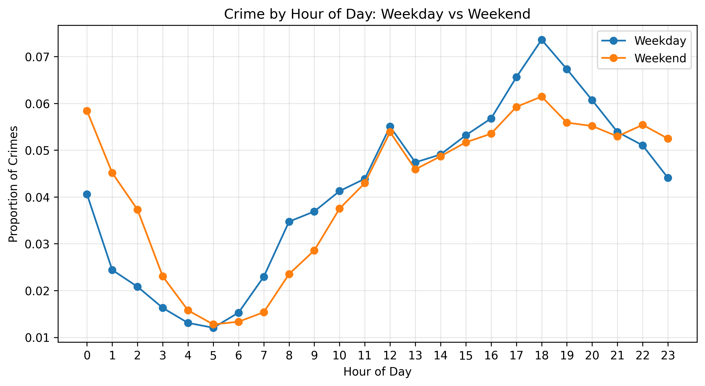
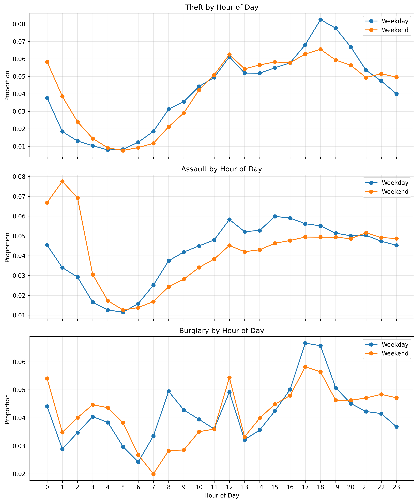
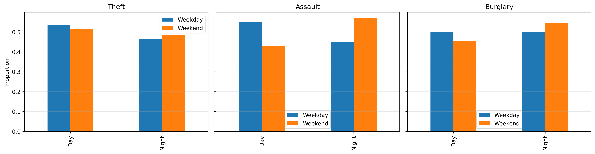

02806 Social Data Analysis: Assignment 2
Introduction
It is often assumed that crime rates increase on weekends due to nightlife and increased levels of social activity. But is this really the case or does crime simply shifts in less obvious ways? In this analysis, we explore how crime patterns differ between weekdays and weekends, focusing on the timing of crimes rather than just their frequency. By examining hourly distributions for different crime types, we aim to uncover whether weekends lead to more crime overall or just a change in when crime occurs.
To investigate this question, we analyze the crime dataset for San Francisco, which covers the period from 2003 to 2025. Instead of examining all categories of crime, we focus on three main types thefts, assaults, and burglaries. These represent different forms of crime, ranging from property-related incidents to more violent offenses, allowing us to investigate whether different types of crimes behave differently over time.
Instead of comparing only the number of crimes, we focus on when they occur. By examining hourly patterns and comparing weekdays with weekends, we aim to reveal whether crime follows different daily rhythms depending on the day of the week.
Does crime increase on weekends?

The overall number of crimes remains very similar between weekdays and weekends. While there are small differences throughout the day, there is no clear increase in total crime during weekends. This challenges the common expectation that weekends are significantly more crime-heavy due to increased social activity.
Instead, the graph shows that crime rates follow a fairly steady daily pattern, regardless of the time of day. In both cases, crime rates are lowest in the early morning hours and rise gradually throughout the day, peaking in the late afternoon and evening. One notable difference is that weekends show slightly higher activity during the late night hours (roughly from midnight to the early morning hours), while on weekdays a more pronounced peak is observed in the early evening.
These findings suggest that, rather than increasing overall, crime on weekends may simply be shifting to different times of the day. This prompts us to examine specific types of crimes more closely in order to understand whether certain categories, such as theft, assault, or burglary exhibit different patterns on weekdays and weekends.
Do different types of crime behave differently?

If we examine specific types of crimes, the general trends are quite similar. Thefts are most common both on weekdays and weekends, peaking in the late afternoon and early evening. Burglaries and assaults also follow similar daily patterns, with activity increasing throughout the day and reaching higher levels later on. However, small but significant differences begin to emerge when we examine the time frame more closely.
As for thefts, on weekdays there is a more pronounced spike in the early evening, while on weekends activity is distributed more evenly throughout the afternoon and night. Assaults, on the other hand, show a notable shift toward the late hours of the night on weekends, with increased activity around midnight compared to weekdays. This is consistent with expectations of increased nightlife and social interactions during weekends. Burglaries exhibit a slightly different pattern, with less pronounced peaks but a tendency toward higher activity in the late afternoon and evening, particularly on weekdays.
Overall, while the total amount of crime does not increase on weekends, the composition and temporal distribution of crimes change slightly. Specifically, crimes more closely related to social factors, such as physical assaults, are clustered more in the late hours of the night during weekends, while property crimes, such as thefts, remain at steady levels throughout the day. This suggests that crime on weekends is not higher, but is distributed differently both in terms of time and type of crime.
Interactive exploration
While the static plots above summarize the main trends, they compress several patterns into a single view. To make these comparisons easier to explore, we also created interactive versions of the hourly crime plots. These allow the reader to focus on one crime type at a time and compare how its distribution changes between weekdays and weekends.
Use the legend inside each plot to toggle crime categories on and off.
The interactive graphs make these trends more visible, as they allow for a detailed analysis of each type of crime individually. In particular, assaults show a clear shift toward the late hours of the night on weekends, with a notable increase after midnight compared to weekdays. This suggests a stronger link to social activities and nightlife.
Theft, on the other hand, follows a much more consistent pattern. It consistently peaks in the late afternoon and early evening both on weekdays and weekends, suggesting that it is less influenced by changes in social behavior and is more closely linked to daily habits. Burglary falls somewhere in between, showing slight fluctuations but no dramatic changes over time.
Overall, these patterns support the idea that weekends do not lead to an increase in crime overall, but do influence when certain crimes are more likely to be committed. The interactive visualizations emphasize that these differences are subtle and refer to specific categories, rather than representing large-scale changes in the overall level of crime
When does crime happen?
Even though, the total number of crimes does not differ significantly between weekdays and weekends, the same cannot be said for the time of day they are committed. For all types of crimes, weekend activity is focused more on the late hours of the night, especially regarding physical assaults, while crimes on weekdays tend to peak earlier in the evening. This shift suggests that the timing patterns of crime are influenced more by daily routines and social behavior than by the day of the week itself.
Key insight: nighttime crime

The most significant difference is observed in cases of violence. On weekdays, approximately 45% of violent incidents occur at night, while on weekends this percentage rises to about 57%. This is a significant change and highlights the fact that violent crimes are clustered to a much greater extent during the late hours on weekends.
Burglaries and thefts also show a slight increase in their proportion of nighttime activity on weekends, but this effect is much smaller. Their distribution remains fairly balanced between day and night, indicating that these types of crimes are less affected by changes in social behavior throughout the week.
This contrast confirms a key finding of our analysis: while overall crime rates remain stable, different types of crime respond differently over the weekend. Specifically, physical assaults appear to be closely linked to nighttime social activity, while property crimes, such as theft and burglary, follow more consistent daily patterns.
Overall, the results show that weekends do not lead to an increase in crime, but rather to a shift toward more nighttime and socially motivated incidents, especially when it comes to violent crimes.

These results show that the main effect of the weekend is not an increase in overall crime, but a shift in the time when crimes are committed. Across all categories, nighttime activity intensifies on weekends, but this effect is particularly evident in the case of physical assaults.
While thefts and burglaries remain relatively evenly distributed between day and night, assaults show a clear shift from a predominantly daytime pattern on weekdays to a predominantly nighttime pattern on weekends. This supports the idea that violent crimes are more closely linked to social activities and nightlife-related activities, while property crimes follow more consistent and routine patterns.
Overall, the findings suggest that crime depends more on everyday behavior and habits than on the simple differentiation between weekdays and weekends. Instead of increasing the number of crimes, weekends primarily shift their temporal distribution, moving certain types of incidents to later hours.
How we did the analysis
We used a dataset of reported crimes in San Francisco for the period 2003–2025. From the timing of each incident, we extracted temporal characteristics such as the time of day and the day of the week. Based on these, each observation was classified as either weekday or weekend.
We then focused on three categories of crimes, such as, theft, assault, and burglary and estimated the standardized hourly distributions. In particular, for each crime category and for each day of the week, we calculated the percentage of incidents that occurred every hour. This allows for a fair comparison between weekdays and weekends, regardless of differences in the total number of crime.
Finally, to identify longer-term patterns, we further grouped the data into day and night periods. Using this classification, we calculated the percentage of crimes committed at night for each type of crime, thereby facilitating a comparison of changes in the time of day crimes are committed between weekdays and weekends.
Conclusion
Crime does not increase on weekends, but its timing does change. While the total number of crimes remains relatively stable, their distribution throughout the day changes significantly.
In addition, violent crimes, such as physical assaults, are more likely to occur during the night on weekends, reflecting the impact of social activities and nightlife. In contrast, property crimes, such as theft and burglary, follow more consistent patterns and are less affected by the shift from weekdays to weekends.
In summary, these results indicate that crime is influenced more by people’s daily habits and behavior than by the simple difference between weekdays and weekends. On weekends, rather than increasing the number of crimes, they mainly shift the time when particular types of incidents are most likely to occur.